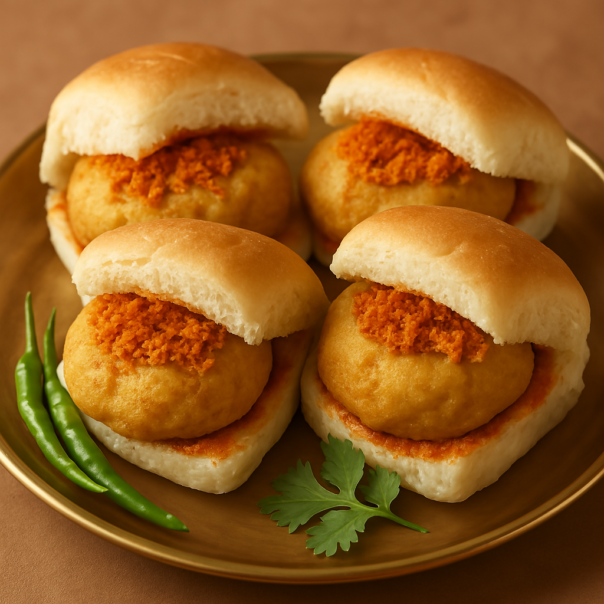

Vada Pav Recipe

🌾 Ingredients
- Pav (Indian buns)
- Boiled potatoes
- Ginger-garlic paste
- Green chilies, coriander leaves
- Turmeric, mustard seeds, curry leaves
- Gram flour (besan) for batter
- Salt, oil for frying
- Dry garlic chutney (optional)
🧑🍳 Procedure
- Mash boiled potatoes and mix with ginger-garlic paste, turmeric, green chilies, mustard seeds, and
curry leaves.
- Shape the mixture into round balls.
- Dip each ball into gram flour batter.
- Deep fry until golden and crispy.
- Slice pav, apply chutney inside, and place the vada in between.
- Serve hot with fried green chilies!